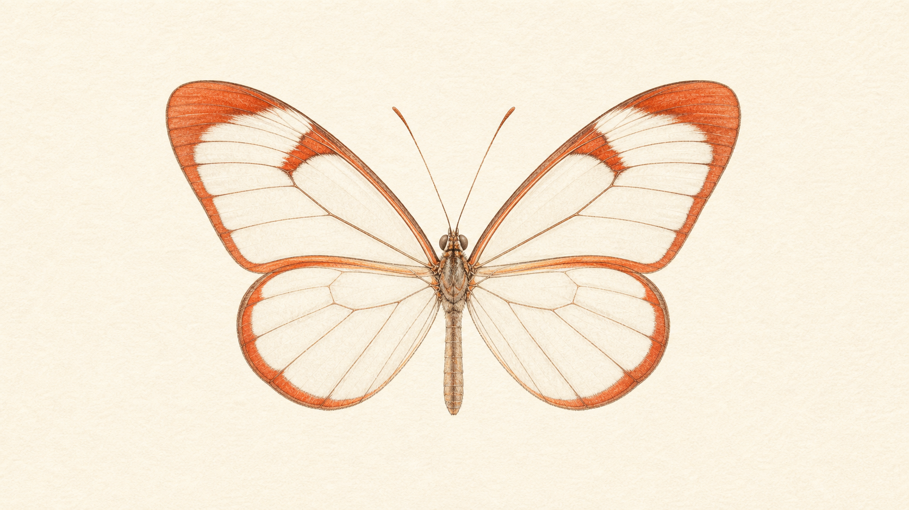

A plain-English, fact-checked briefing on what shipped today, how the new safety design actually works, what it costs, and what it changes for engineering teams.
Claude Fable 5 launched today, June 9, 2026 — the first publicly available model in Anthropic's new Claude 5 line, and the most capable model they've ever made generally available.
It's the same underlying model as Claude Mythos 5 (also out today), but "made safe for general use." When you ask about cybersecurity, biology/chemistry, or model distillation, a classifier quietly routes that response to the older Claude Opus 4.8 instead. That fallback fires in under 5% of sessions. Those same guardrails are what finally made a model this powerful safe to release widely.
It costs $10 / $50 per million tokens (double Opus 4.8), is on the API today, and is free on Pro/Max/Team plans only through June 22.
Anthropic describes Fable 5 as "a Mythos-class model that we've made safe for general use," with capabilities that "exceed those of any model we've ever made generally available." Until today, the strongest model the public could touch was Claude Opus 4.8. Fable 5 raises that ceiling.
Anthropic reports it is state-of-the-art on nearly all tested benchmarks, with standout strength in software engineering, knowledge work, vision, and scientific research — and a consistent pattern: the longer and more complex the task, the larger Fable 5's lead over other models. Its API model id is claude-fable-5.
This is the part worth getting right. Fable 5 and Mythos 5 are the same underlying model. The difference is who's holding the controls:
One outlet summed it up neatly: Fable is "Mythos on a leash." The Mythos family had shown a near-superhuman ability to find and chain together cyber vulnerabilities — capable enough that it stayed behind closed doors for months. Fable 5 is how that capability reaches the rest of us safely.

Most "safety" is a model refusing. Fable 5 does something more interesting: it hands the hard cases to a weaker model. Classifiers watch every request. If one looks like it touches cybersecurity, biology and chemistry, or distillation (including jailbreak attempts), the response is generated by Claude Opus 4.8 instead of Fable 5 — and you're told when it happens.
Anthropic was explicit about the reasoning: "Fable 5's capabilities in areas like cybersecurity, biology and chemistry are advanced enough that we're taking a deliberately conservative approach for these topics at launch." The classifiers aren't a limitation bolted on after the fact — they're the thing that made a public release possible at all. This is the first time a model of this capability class has been judged safe enough for broad public and developer access.
Anthropic and its launch partners published strong results. Read these as vendor-reported claims, not independent benchmarks — they came from Anthropic and partners, and haven't yet been reproduced by neutral third parties.
| Benchmark | Fable 5 | For context |
|---|---|---|
| SWE-Bench Pro real-world software engineering | 80.3% | GPT-5.5: 58.6% · Gemini 3.1 Pro: 54.2% |
| Hex core analytics | >90% | First model ever past 90% — ~10 pts over Opus |
| Genspark coding evals | #1 | Won head-to-head vs. every model tested; strongest on the hardest UI & game-coding tasks |
| Cognition FrontierCode | Top | Highest score reported on the suite |
The throughline matches the headline benchmark: Fable 5 is built for long, hard, multi-step engineering and analysis work — exactly the kind of agentic tasks where weaker models lose the plot halfway through.
Power has a price tag. Fable 5 and Mythos 5 both cost $10 per million input tokens and $50 per million output tokens — exactly double Opus 4.8's standard rate, but less than half what the earlier Mythos Preview cost partners.
| Model | Input / 1M | Output / 1M |
|---|---|---|
| Claude Fable 5 (= Mythos 5) | $10 | $50 |
| Claude Opus 4.8 (standard) | $5 | $25 |
| Claude Mythos Preview (prior, partner) | > $20 | > $100 |
Press coverage also noted the usual levers apply: a ~90% prompt-caching discount on cached input, and US-only inference at a 1.1× premium. The practical takeaway for builders is below.
Fable 5 is live today on the Claude API and consumption-based Enterprise plans. But there's a date to circle:
Beyond the launch buzz, three things are genuinely useful to internalize:
The bigger signal: Anthropic just demonstrated that you can take a model powerful enough to be genuinely dangerous and still release it broadly — if the safety system is good enough. That's the same bet every team deploying agentic AI is making at smaller scale.
Every fact above rests on the official announcement plus tier-1 press. Crypto and low-quality outlets echoed the story but were never load-bearing.